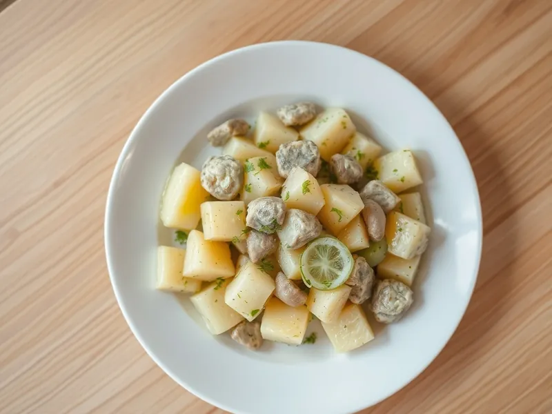

Тёплый картофельный салат с селёдкой и луком
Горячая картошка с солёной сельдью, маринованным луком и растительным маслом
25 мин3 порц.449 ккал на порциюБ 21 · Ж 24 · У 38Русская кухня
Открыть в приложении: порции, таймеры, список покупок
Продукты на 3 порц.
- Картофель5 шт
- Сельдь солёная250 г
- Лук репчатый1 шт
- Огурцы солёные2 шт
- Растительное масло2 ст. л.
- Уксус 9%1 ч. л.
- Сахар2 щеп.
- Укроп15 г
- Соль0,5 ч. л.
Как готовить
- Очистите картофель, нарежьте кубиками 2 см и отварите в подсоленной воде на среднем огне 10-12 минут, пока он не станет мягким, но не развалится.
- Пока варится картофель, нарежьте лук тонкими полукольцами, залейте 100 мл тёплой воды с уксусом и сахаром на 10 минут, затем отожмите.
- Нарежьте филе сельди кусочками 2 см, солёные огурцы кружками, укроп порубите.
- Слейте воду с картофеля и сразу полейте его маслом, чтобы горячий картофель впитал аромат.
- Добавьте сельдь, лук, огурцы и укроп, аккуратно перемешайте и подавайте тёплым.
Совет. Возьмите нерафинированное подсолнечное масло, с ним вкус как у бабушки. Не солите картофель сильно, сельдь и огурцы добавят соли.